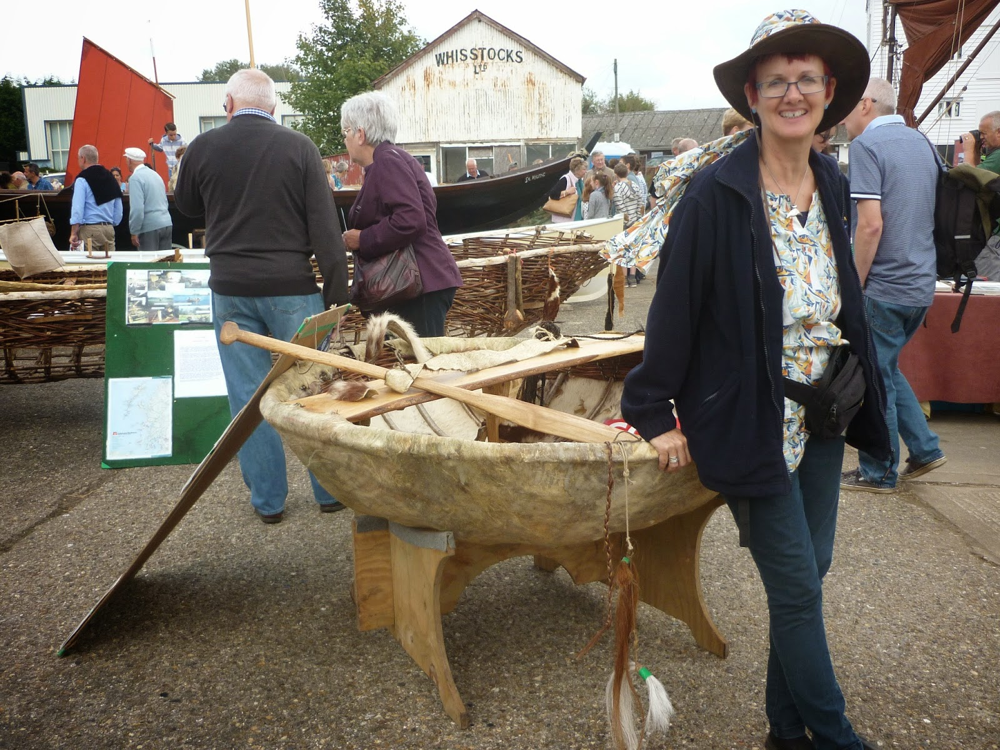
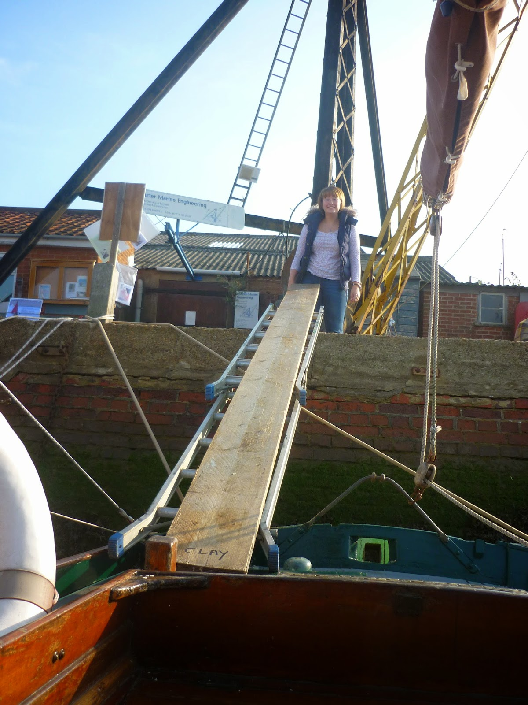
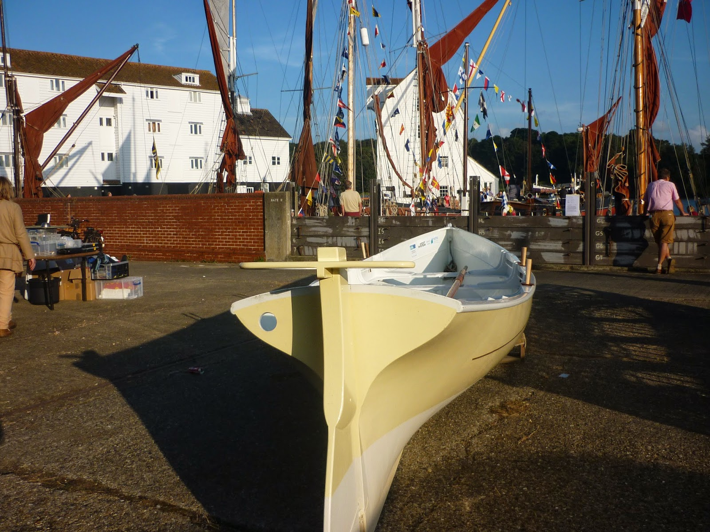
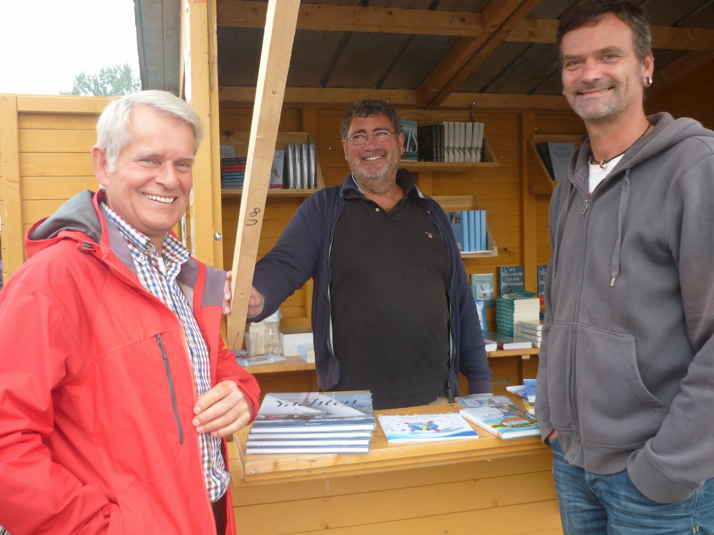
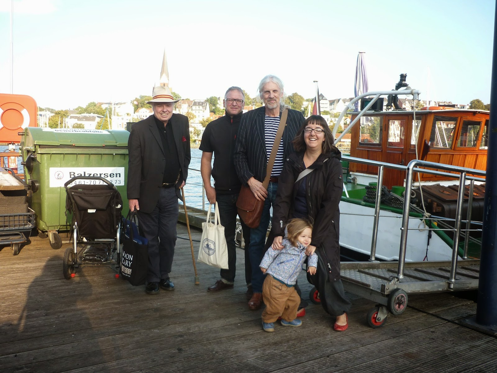
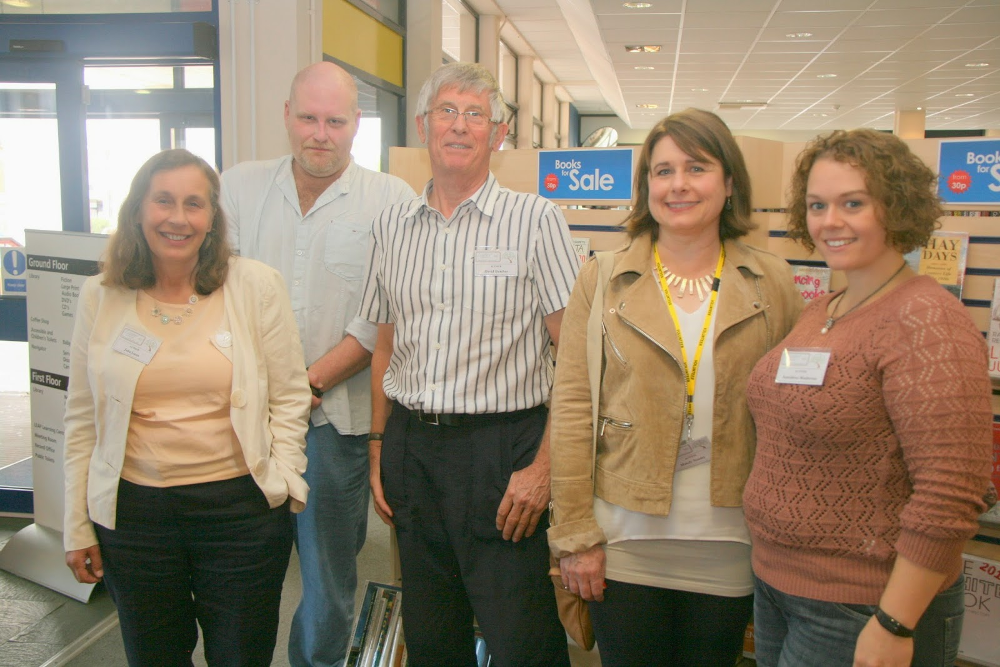
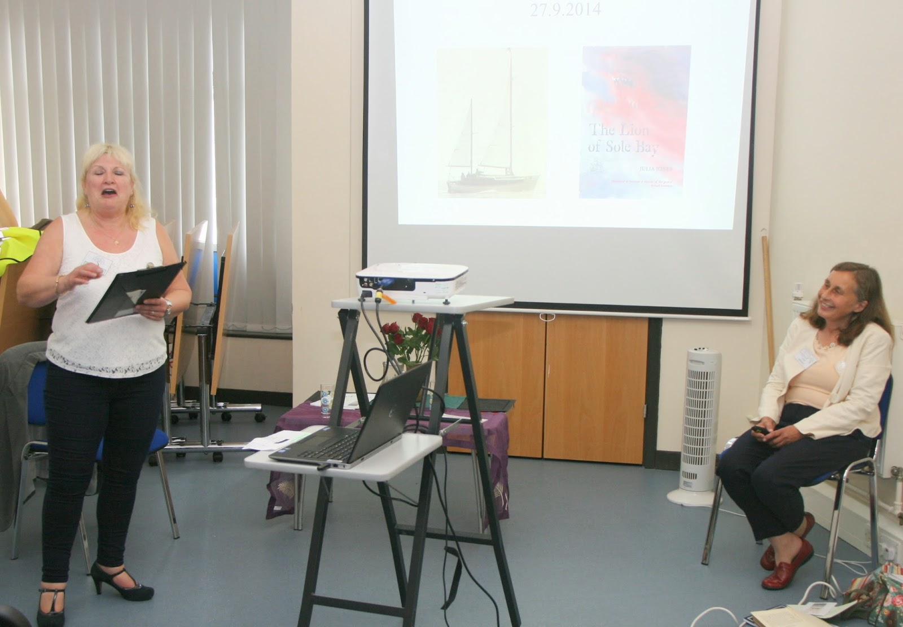

 |
| What festival organisers do - 1. Claudia Myatt, coracle addict, Strong Winds series illustrator and part of the M Woodbridge team pretending that all she does is pose |
{kind=link}
First in the diary came Maritime Woodbridge. This is a biennial happening centered mainly around a derelict boatyard but extending some way further along the Woodbridge waterfront and into the town as well. It's intended to connect with the Heritage Open Days scheme, the weekend every year when interesting places that are not normally open invite the public in or free. In Woodbridge the main pieces of heritage are boats and one of the reasons that it can only be biennial is that it must coincide with mid-day high tides. The river is otherwise absent from the occasion.
 |
| The tide is low. My friend Fliss faces The Plank |
{kind=link}
 |
| Matchless at Maritime Woodbridge |
{kind=link}
Bottles of beer were much in evidence the following weekend when Francis and I were enjoying the delights of Flensburg in the north German state of Schleswig Holstein. It's at the tip of a Baltic fiord and is where Carruthers joins Davies and the Dulcibella in chapter 2 of The Riddle of the Sands. Childers's characters knocked back a grog or two (the town is famous for its rum) but were too busy Saving The Empire to try as much as a single Flensburger Pilsener. We didn't make their mistake. We were in Flensburg for the second Literaturboot festival -- and once again it was Peter Duck who had initially wangled our invitation. Martin Schulz, project manager at the town's historic harbour, had happened to come sailing on board PD when I'd loaned her to a mutual friend. They were prevented by fog from reaching Ransome's Secret Water so in desperation Martin picked The Salt-Stained Book from her shelves. He read it and we became friends, mainly via the favouring winds of social media. Then he and his wife and adorable child had time to spare in Harwich. We met and the plot was hatched.
Now I could really burst into holiday mode as my lovely Francis hasn't been able to go anywhere since he arrived home from a lit fest in Australia four years ago and began suffering excruciating, debilitating back pain which has led to a depressing series of operations and what they call 'procedures' in health-speak. The most recent was performed by a doctor who strolled in with a needle and asked Francis where he wanted her to stick it. Nobly controlling himself he simply suggested that as she was (allegedly) the professional he'd rather hoped she might have had some ideas... ? So she jabbed it in, the darned thing appeared to work and we were in the car and heading for the Harwich-Esbjerg ferry without pausing to check whether she was actually an escaped vet, more used to sedating the rhinos at Colchester Zoo.
But I won't. I won't tell you what joy it was to be trundling through the North Sea islands of Romo and Sylt, the two of us together in our trusty Skoda Fabia, nor will I mention sitting in the sunshine on a Baltic excursion vessel investigating the merits of Pilsener, Dunkel, Weizen or Gold while munching on an equally bewildering variety of pickled herrings and looking out for dampfers, galeasses, jollen and dei klassischen Yachten. I'll just say that if you like boats and books, Flensburg is the place for you.
 |
| What festival organisers do - 2. Detlef Jens in the bookstall accompanied by singers |
{kind=link}
 |
| Support team = Francis, Martin, Alistair, Manya, Doris and Gesine |
{kind=link}
Audience size was possibly a disappointment for the Friends of Lowestoft Library who organised "the most easterly festival in Britain" and yes, you guessed it, had rather hoped that Peter Duck might like to come... But I was only just home from "the most northerly town in Germany" and what is 40 minutes on the train from Woodbridge is a full day's sail by boat. So they only got me and anyway I'm not entirely sure how PD would have fitted into the pleasant upstairs meeting room where I joined five other guests. There was Anneliese Matheron, bubbly author of children's books for the 7-10s (and enthusiastic amateur astronomer AND home-schoolerof her children): David Butcher, indefatigable local historian (how I wished I'd met him before writing Mr Vandervelde in The Lion of Sole Bay) and illustrator Mandy Stanley whose Lettice Rabbit books have sold over a million copies and whose main problem is the physical pain she experiences keeping completely as she draws on her graphics pad. I wish I could express how impressively professional she was and how much I hope that she'll never need the services of Francis's escaped-vet-back-injector.
 |
| The enthusiasts, Lowestoft: Julia, John, David, Mandy & Anneliese Elly was double-acting it at Southwold Library |
{kind=link}
And that was just the morning. After lunch we had The Curator (+ her Peter Duck leaflets) and then the irrepressible 'writerman' John Hales who had been taught throughout his Lowestoft secondary school by indefatigable David Butcher (above), had run a travelling Shakespeare company (plus plus plus) , saved the Lowestoft Seagull Theatre and had just been nominated for his first BAFTA in the 'breakthrough' category at the age of 44. I mean it was all -- wow! I couldn't stay to hear thriller-writer Elly Griffiths but guzzled two of her hugely enjoyable Ruth Galloway investigations there and back via Abellio Great Anglia. A Great Day Out, as the posters would say.
I have no conclusions to draw. All I can say is that, for me, these three festivals were properly festive. And I'd like to thank all the people who gave up their time to organising them and who invited ... Peter Duck.
 |
| What festival organisers do - 3. Diana, Friend of Lowestoft Library bravely realising she has only The Curator to introduce |
{kind=link}
(PS If mention of the Riddle of the Sands awakens feelings of nostalgia, you might like to consider Mark Chisnell's The Fulcrum Files or Sam Llewellyn's The Shadow of the Sands, two thrillers reviewed on our sister site Eclectic Electric.)